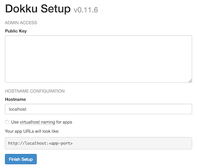

Deploy a Flask Application with Dokku
Updated by Linode Written by Sam Foo
Dokku is a self-hosted Platform-as-a-Service (PaaS) that makes deploying applications simple using Git. Although Dokku’s implementation is similar to Heroku, it lacks certain key features such as auto-scaling. Dokku is an extremely powerful tool that automatically runs your application inside Docker and requires minimal configuration of web servers.
This guide demonstrates how to:
- Create a Flask application that returns ‘Hello World!’ on the index page
- Install Dokku on a Linode
- Deploy a Flask application with a WSGI server inside a Docker container
- Add an SSL certificate through Dokku with the Let’s Encrypt plugin
Before You Begin
On Your Local Computer
NoteDokku v0.12.5 is compatible with Ubuntu 16.04 x64, Ubuntu 14.04 x64, and Debian 8.2 x64. CentOS 7 x64 is only supported experimentally, and as such some steps like configuring SSH keys and virtual hosts must be done manually using the dokku command line interface. See the official documentation for more information.
A public key is assumed to be available. Typically this is located in ~/home/username/.ssh/id_rsa.pub.
Install Git if needed:
sudo apt install git
On Your Linode
The Dokku install script creates a dokku user on the system, installs Docker, and pulls the relevant image.
Download the install script from Dokku then run the script:
wget https://raw.githubusercontent.com/dokku/dokku/v0.12.5/bootstrap.sh sudo DOKKU_TAG=v0.12.5 bash bootstrap.shPreparing to install v0.11.6 from https://github.com/dokku/dokku.git... For dokku to build containers, it is strongly suggested that you have 1024 megabytes or more of free memory If necessary, please consult this document to setup swap: http://dokku.viewdocs.io/dokku/advanced-installation/#vms-with-less-than-1gb-of-memory --> Ensuring we have the proper dependencies --> Initial apt-get update --> Installing docker --> NOTE: Using Linode? Docker may complain about missing AUFS support. You can safely ignore this warning. Installation will continue in 10 seconds. ...Navigate to the public IP address of your Linode in a browser and enter the public key:

Caution
Add the public key immediately after running the installation script to avoid someone else adding a public key to Dokku. For an unattended installation, refer to the advanced installation instructions.To add additional SSH keys, pipe the output over SSH to the
dokkuuser. Replaceexample.comwith the IP address of your Linode.cat ~/.ssh/id_rsa.pub | ssh dokku@example.com ssh-keys:add new-key
Create a Flask Application
On your local computer, create a new project directory:
mkdir flask-example && cd flask-exampleCreate a new file called
hello_world.pythat serves ‘Hello World!’ on the index page.- hello_world.py
-
1 2 3 4 5 6 7 8 9 10 11 12 13 14import os from flask import Flask app = Flask(__name__) @app.route('/') def hello(): return 'Hello World!' if __name__ == '__main__': # Bind to PORT if defined, otherwise default to 5000. port = int(os.environ.get('PORT', 5000)) app.run(host='127.0.0.1', port=port)
Add a
requirements.txtfile to track versions of any dependencies of the Flask application. Gunicorn is the WSGI server used to allow Flask to interface properly with NGINX.- requirements.txt
-
1 2Flask==0.12.1 gunicorn==19.7.1
For more complex projects with many dependencies using a virtual environment, redirect output of
pip freezeintorequirements.txt.pip freeze > requirements.txt
Add a gitignore
Optionally, add a .gitignore file to have Git omit caching and virtual environment files from version control.
- .gitignore
-
1 2 3 4__pycache__/ *.pyc venv/
Procfile
The Procfile tells the Gunicorn server what command to use when launching the app:
- Procfile
-
1web: gunicorn hello_world:app --workers=4
Note4 workers is a good default for an web app running on a Linode. See the Gunicorn docs for more information about determining the correct number of workers for your particular app.
Git Remote
Initialize a Git repository:
git init git add . git commit -m "Deploy Flask with Dokku"Add a remote named
dokkuwith the usernamedokkuand substituteexample.comwith the public IP address of your Linode:git remote add dokku dokku@example.com:flask-exampleVerify the remote is added:
git remote -vThis will list the remotes.
dokku dokku@example-ip:flask-example (fetch) dokku dokku@example-ip:flask-example (push)In summary, the project layout looks like:
flask-example ├── .gitignore ├── Procfile ├── hello_world.py └── requirements.txt
Create Project on a Dokku Host
SSH into your Linode and create the application:
dokku apps:create flask-exampleMake sure VHOST is enabled.
dokku domains:enable flask-example
Deploy a Flask Application
On your local computer, deploy the Flask application by pushing the branch to the
dokkuremote. This will take care of NGINX behind the scenes and expose port80:git push dokku masterOther local branches can also be deployed but, all branches must be pushed to the master branch of the
dokkuremote:git push dokku branch-name:mastercurlthe IP address of your Linode to test that the app was deployed successfully:curl example.comHello World!
SSL Certificate with Dokku and Let’s Encrypt
The remaining steps in this guide should be performed from your Linode.
Install the Let’s Encrypt plugin for Dokku:
sudo dokku plugin:install https://github.com/dokku/dokku-letsencrypt.gitSet the
DOKKU_LETSENCRYPT_EMAILenvironment variable to the email for Let’s Encrypt:dokku config:set flask-example DOKKU_LETSENCRYPT_EMAIL=docs@linode.comAdd the application and domain:
dokku domains:add flask-example example.comCreate the SSL certificate. NGINX will automatically start serving the application over HTTPS on port 443:
dokku letsencrypt flask-exampleRun this as a cron job so the certificate will renew automatically:.
dokku letsencrypt:cron-job --addNote
This requires Dokku version 0.5 or higher. Check by runningdokku version.
Start, Stop, and Restart Applications
List all running Dokku applications:
dokku appsRestart an application:
dokku ps:restart flask-exampleStop an application:
dokku ps:stop flask-exampleRestore all applications after a reboot:
dokku ps:restore
View Application Logs
View the application logs through Dokku or the Docker container.
To see logs through Dokku:
dokku logs flask-exampleList all running Docker containers:
sudo docker ps -aFind the container ID then run:
sudo docker logs container_id
Scale Applications
Dokku does not scale applications automatically, and by default will only run a single web process. To increase the number of containers running your application, you can use the ps:scale command.
Check how many workers your application currently has:
dokku ps:scale flask-example-----> Scaling for flask-example -----> proctype qty -----> -------- --- -----> web 1Scale up to 4
webprocesses:dokku ps:scale flask-example web=4Confirm that the new processes are running:
-----> Scaling for flask-example -----> proctype qty -----> -------- --- -----> web 4
Dokku is an open source alternative to Heroku for small applications. Deploying applications is as simple as pushing to a remote with Git. Elements such as Docker and NGINX are abstracted away to minimize time to deployment. There are additional features such as pre-deploy hooks and linking databases which are not shown in this guide.
More Information
You may wish to consult the following resources for additional information on this topic. While these are provided in the hope that they will be useful, please note that we cannot vouch for the accuracy or timeliness of externally hosted materials.
Join our Community
Find answers, ask questions, and help others.
This guide is published under a CC BY-ND 4.0 license.